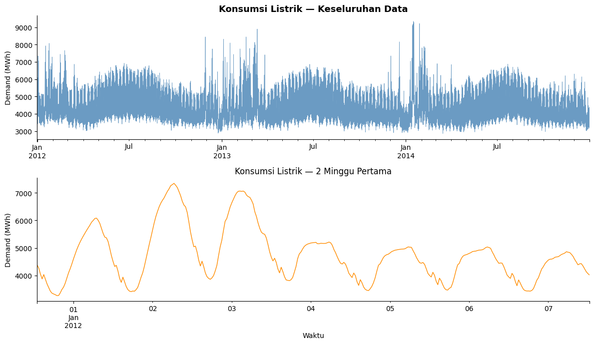
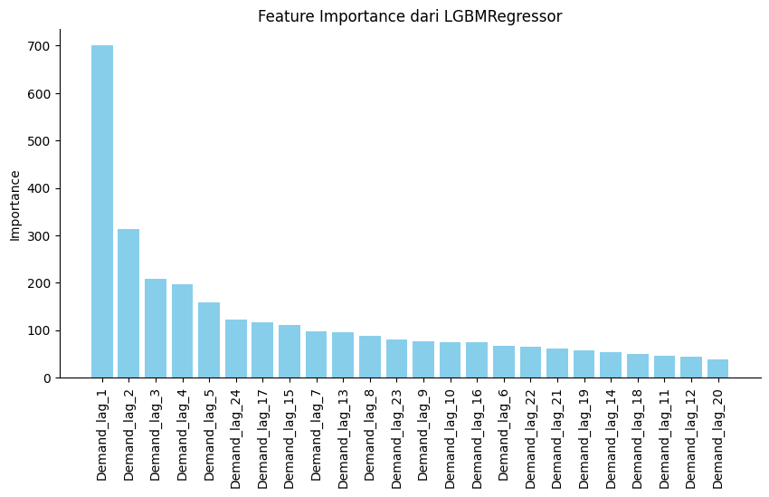

Forecasting dengan Explainability di SKForecast#
1. Analisis Prediksi#
Refrensi: https://skforecast.org/0.15.1/user_guides/explainability.html
Prediksi ini fokus pada peramalan deret waktu (time series forecasting). Model mempelajari nilai-nilai masa lalu untuk memperkirakan nilai di masa depan.
Contoh aplikasi nyata:
Prediksi penjualan harian/bulanan Prediksi harga saham Prediksi permintaan barang Prediksi trafik website
Tujuannya:
Menghasilkan prediksi yang akurat. Mengetahui kontribusi tiap input (lag) terhadap hasil prediksi (explainability).
2. Bentuk Data Training#
Data time series biasanya memiliki dua komponen:
Index waktu (datetime)
Target variable (nilai yang diprediksi)
Contoh dataset awal:
ds (tanggal) |
y (nilai) |
|---|---|
2022-01-01 |
120 |
2022-01-02 |
130 |
2022-01-03 |
128 |
Setelah dibuat lag (feature input):
y_lag_1 |
y_lag_2 |
y_lag_3 |
y |
|---|---|---|---|
128 |
130 |
120 |
132 |
130 |
128 |
120 |
135 |
Input (X) → y_lag_1, y_lag_2, dst
Output (y) → target deret waktu
3. Apa Itu Lag?#
a. Definisi Sederhana#
Lag adalah nilai masa lalu yang digunakan sebagai feature untuk memprediksi nilai di masa depan dalam deret waktu (time series).
Dengan kata lain, lag adalah “nilai sebelumnya” yang membantu model memahami pola temporal.
b. Analogi Mudah#
Bayangkan kamu ingin menebak cuaca besok.
Cuaca hari ini dan beberapa hari sebelumnya adalah informasi penting.
Data ini mirip dengan lag dalam forecasting, karena nilai masa lalu membantu prediksi masa depan.
c. Ilustrasi Visual#
Misal kita punya penjualan selama 5 hari:
Hari |
Penjualan |
Lag 1 |
Lag 2 |
Lag 3 |
|---|---|---|---|---|
1 |
120 |
- |
- |
- |
2 |
130 |
120 |
- |
- |
3 |
128 |
130 |
120 |
- |
4 |
132 |
128 |
130 |
120 |
5 |
135 |
132 |
128 |
130 |
Kolom Lag 1 = nilai sehari sebelumnya
Kolom Lag 2 = nilai dua hari sebelumnya
Kolom Lag 3 = nilai tiga hari sebelumnya
Catatan: Semakin banyak lag yang digunakan, model dapat menangkap pola jangka pendek dan jangka panjang, tapi terlalu banyak lag juga bisa menyebabkan overfitting.
4. Proses Analisis yang Dilakukan#
Proses analisis forecasting dengan SKForecast melibatkan beberapa tahap, dari persiapan data hingga interpretasi hasil prediksi.
a. Alur Keseluruhan#
Load Data
Dataset berupa deret waktu, misal
vic_electricity.Pastikan kolom tanggal (
ds) sebagai index waktu, dan kolom target (y) bersih dari missing value.
Transformasi Lag
Nilai historis diubah menjadi feature lag (misal
lag_1sampailag_24).Tujuan: memberi konteks temporal pada model agar pola masa lalu membantu prediksi masa depan.
Training Model
Gunakan
ForecasterRecursivedenganLGBMRegressoruntuk mempelajari hubungan antara lag dan target.Model belajar dari data historis untuk memprediksi langkah selanjutnya secara berulang (recursive forecasting).
Prediksi dan Evaluasi
Prediksi dilakukan untuk beberapa periode ke depan (
steps).Evaluasi menggunakan backtesting, dengan metrik error seperti MAE, MAPE, atau RMSE.
Memastikan model tidak overfit dan prediksi realistis.
b. Rumus Matematis Forecasting (Autoregressive)#
\((\hat{y}_t\)) → prediksi pada waktu t
\((y_{t-1}, y_{t-2}, \)dots\()\) → nilai lag
\((\beta_1, \beta_2, \)dots\()\) → bobot yang dipelajari model
Implementasi Forecasting Time Series dengan SKForecast#
Step 1 — Persiapan Library#
Sebelum memulai analisis forecasting, kita perlu memastikan semua library yang diperlukan sudah tersedia.
Langkah ini hanya dijalankan sekali saja di Google Colab atau Jupyter Notebook.
!pip install --upgrade pip
!pip install scikit-learn skforecast lightgbm pandas matplotlib --quiet
Requirement already satisfied: pip in /usr/local/python/3.12.1/lib/python3.12/site-packages (26.0.1)
Collecting pip
Downloading pip-26.1.2-py3-none-any.whl.metadata (4.6 kB)
Downloading pip-26.1.2-py3-none-any.whl (1.8 MB)
?25l ━━━━━━━━━━━━━━━━━━━━━━━━━━━━━━━━━━━━━━━━ 0.0/1.8 MB ? eta -:--:--
━━━━━━━━━━━━━━━━━━━━━━━━━━━━━━━━━━━━━━━━ 1.8/1.8 MB 20.2 MB/s 0:00:00
?25h
Installing collected packages: pip
Attempting uninstall: pip
Found existing installation: pip 26.0.1
Uninstalling pip-26.0.1:
Successfully uninstalled pip-26.0.1
Successfully installed pip-26.1.2
^C
Step 2 — Import Library#
Setelah library berhasil diinstal, langkah berikutnya adalah mengimpor semua library dan modul yang akan digunakan untuk analisis dan visualisasi data time series.
Kami membuat versi ini sedikit berbeda agar lebih mudah dipahami.
# Mengabaikan peringatan agar tampilan lebih bersih
import warnings
warnings.filterwarnings('ignore')
# Library utama untuk manipulasi data dan komputasi
import pandas as pd
import numpy as np
# Library untuk visualisasi
import matplotlib.pyplot as plt
# Library untuk explainability
import shap
from sklearn.inspection import permutation_importance, PartialDependenceDisplay
# Library untuk model forecasting
from lightgbm import LGBMRegressor
from skforecast.datasets import fetch_dataset
from skforecast.recursive import ForecasterRecursive
# Pengaturan tampilan grafik
plt.rcParams['figure.figsize'] = (10,5)
plt.rcParams['axes.spines.top'] = False
plt.rcParams['axes.spines.right'] = False
print("✅ Semua library berhasil di-import dan siap digunakan!")
✅ Semua library berhasil di-import dan siap digunakan!
Step 3 — Load dan Eksplorasi Data#
Pada langkah ini kita memuat dataset dan melakukan eksplorasi awal untuk memahami pola data.
a. Load Dataset
Dataset yang digunakan:
vic_electricitySumber: Konsumsi listrik per 30 menit di Victoria, Australia
# Memuat dataset vic_electricity
data_raw = fetch_dataset('vic_electricity', raw=True)
print(f"📄 Bentuk dataset awal: {data_raw.shape}")
print(data_raw.head())
vic_electricity
---------------
Half-hourly electricity demand for Victoria, Australia
O'Hara-Wild M, Hyndman R, Wang E, Godahewa R (2022).tsibbledata: Diverse
Datasets for 'tsibble'. https://tsibbledata.tidyverts.org/,
https://github.com/tidyverts/tsibbledata/.
https://tsibbledata.tidyverts.org/reference/vic_elec.html
Shape of the dataset: (52608, 5)
📄 Bentuk dataset awal: (52608, 5)
Time Demand Temperature Date Holiday
0 2011-12-31T13:00:00Z 4382.825174 21.40 2012-01-01 True
1 2011-12-31T13:30:00Z 4263.365526 21.05 2012-01-01 True
2 2011-12-31T14:00:00Z 4048.966046 20.70 2012-01-01 True
3 2011-12-31T14:30:00Z 3877.563330 20.55 2012-01-01 True
4 2011-12-31T15:00:00Z 4036.229746 20.40 2012-01-01 True
Penjelasan:
data_raw berisi semua kolom asli, termasuk waktu dan demand listrik.
Memeriksa bentuk dan beberapa baris pertama penting untuk memahami struktur data.
b. Preprocessing Data
Menyiapkan kolom target dan index waktu. Pastikan frekuensi data sesuai (30 menit) dan hanya ambil kolom target (Demand).
# Salin data asli
data = data_raw.copy()
# Konversi kolom waktu menjadi datetime
data['Time'] = pd.to_datetime(data['Time'])
# Set index waktu
data = data.set_index('Time')
# Pastikan frekuensi data 30 menit
data = data.asfreq('30min')
# Ambil kolom target saja
data = data['Demand']
# Tampilkan ringkasan
print(" Data siap!")
print(f"Jumlah data : {len(data):,} baris")
print(f"Periode : {data.index.min()} → {data.index.max()}")
print(f"Demand min : {data.min():.1f} MWh")
print(f"Demand max : {data.max():.1f} MWh")
print(f"Demand rata : {data.mean():.1f} MWh")
data.head(10)
Data siap!
Jumlah data : 52,608 baris
Periode : 2011-12-31 13:00:00+00:00 → 2014-12-31 12:30:00+00:00
Demand min : 2857.9 MWh
Demand max : 9345.0 MWh
Demand rata : 4665.4 MWh
| Demand | |
|---|---|
| Time | |
| 2011-12-31 13:00:00+00:00 | 4382.825174 |
| 2011-12-31 13:30:00+00:00 | 4263.365526 |
| 2011-12-31 14:00:00+00:00 | 4048.966046 |
| 2011-12-31 14:30:00+00:00 | 3877.563330 |
| 2011-12-31 15:00:00+00:00 | 4036.229746 |
| 2011-12-31 15:30:00+00:00 | 3865.597244 |
| 2011-12-31 16:00:00+00:00 | 3694.097664 |
| 2011-12-31 16:30:00+00:00 | 3561.623686 |
| 2011-12-31 17:00:00+00:00 | 3433.035352 |
| 2011-12-31 17:30:00+00:00 | 3359.468000 |
c. Visualisasi Data Lihat pola data keseluruhan dan beberapa periode awal untuk memahami fluktuasi harian.
# Visualisasi data
fig, axes = plt.subplots(2,1, figsize=(12,7))
# Plot keseluruhan
data.plot(ax=axes[0], color='steelblue', linewidth=0.5, alpha=0.8)
axes[0].set_title('Konsumsi Listrik — Keseluruhan Data', fontsize=13, fontweight='bold')
axes[0].set_ylabel('Demand (MWh)')
axes[0].set_xlabel('')
# Plot detail 2 minggu pertama
data.iloc[:24*2*7].plot(ax=axes[1], color='darkorange', linewidth=1)
axes[1].set_title('Konsumsi Listrik — 2 Minggu Pertama', fontsize=12)
axes[1].set_ylabel('Demand (MWh)')
axes[1].set_xlabel('Waktu')
plt.tight_layout()
plt.show()
print("💡 Perhatikan pola naik-turun harian — ini yang akan ditangkap oleh lag!")

💡 Perhatikan pola naik-turun harian — ini yang akan ditangkap oleh lag!
Step 4 — Memahami Konsep Lag#
a. Membuat Fitur Lag Lag adalah nilai masa lalu yang digunakan sebagai input model agar dapat menangkap pola temporal.
# Tentukan jumlah lag
n_lags = 24 # misal 24 langkah (12 jam jika data tiap 30 menit)
# Buat fitur lag secara otomatis
data_lag = data.to_frame().copy()
for i in range(1, n_lags+1):
data_lag[f'Demand_lag_{i}'] = data_lag['Demand'].shift(i)
# Buang baris dengan nilai NA hasil lag
data_lag = data_lag.dropna()
print(f"✅ Fitur lag berhasil dibuat: {data_lag.shape[1]-1} lag")
data_lag.head()
✅ Fitur lag berhasil dibuat: 24 lag
| Demand | Demand_lag_1 | Demand_lag_2 | Demand_lag_3 | Demand_lag_4 | Demand_lag_5 | Demand_lag_6 | Demand_lag_7 | Demand_lag_8 | Demand_lag_9 | ... | Demand_lag_15 | Demand_lag_16 | Demand_lag_17 | Demand_lag_18 | Demand_lag_19 | Demand_lag_20 | Demand_lag_21 | Demand_lag_22 | Demand_lag_23 | Demand_lag_24 | |
|---|---|---|---|---|---|---|---|---|---|---|---|---|---|---|---|---|---|---|---|---|---|
| Time | |||||||||||||||||||||
| 2012-01-01 01:00:00+00:00 | 4938.795740 | 4772.133542 | 4599.507418 | 4413.074788 | 4245.024938 | 4092.566212 | 3909.300738 | 3719.985142 | 3580.091164 | 3494.418154 | ... | 3359.468000 | 3433.035352 | 3561.623686 | 3694.097664 | 3865.597244 | 4036.229746 | 3877.563330 | 4048.966046 | 4263.365526 | 4382.825174 |
| 2012-01-01 01:30:00+00:00 | 5080.138254 | 4938.795740 | 4772.133542 | 4599.507418 | 4413.074788 | 4245.024938 | 4092.566212 | 3909.300738 | 3719.985142 | 3580.091164 | ... | 3331.343274 | 3359.468000 | 3433.035352 | 3561.623686 | 3694.097664 | 3865.597244 | 4036.229746 | 3877.563330 | 4048.966046 | 4263.365526 |
| 2012-01-01 02:00:00+00:00 | 5211.915476 | 5080.138254 | 4938.795740 | 4772.133542 | 4599.507418 | 4413.074788 | 4245.024938 | 4092.566212 | 3909.300738 | 3719.985142 | ... | 3304.641186 | 3331.343274 | 3359.468000 | 3433.035352 | 3561.623686 | 3694.097664 | 3865.597244 | 4036.229746 | 3877.563330 | 4048.966046 |
| 2012-01-01 02:30:00+00:00 | 5328.317180 | 5211.915476 | 5080.138254 | 4938.795740 | 4772.133542 | 4599.507418 | 4413.074788 | 4245.024938 | 4092.566212 | 3909.300738 | ... | 3272.106404 | 3304.641186 | 3331.343274 | 3359.468000 | 3433.035352 | 3561.623686 | 3694.097664 | 3865.597244 | 4036.229746 | 3877.563330 |
| 2012-01-01 03:00:00+00:00 | 5436.420076 | 5328.317180 | 5211.915476 | 5080.138254 | 4938.795740 | 4772.133542 | 4599.507418 | 4413.074788 | 4245.024938 | 4092.566212 | ... | 3275.998060 | 3272.106404 | 3304.641186 | 3331.343274 | 3359.468000 | 3433.035352 | 3561.623686 | 3694.097664 | 3865.597244 | 4036.229746 |
5 rows × 25 columns
Step 5 — Membuat dan Melatih Model#
from skforecast.recursive import ForecasterRecursive
from lightgbm import LGBMRegressor
# Buat forecaster dengan LGBMRegressor
forecaster = ForecasterRecursive(
regressor=LGBMRegressor(n_estimators=100, random_state=42),
lags=n_lags
)
# Fit model menggunakan target
forecaster.fit(y=data_lag['Demand'])
print("✅ Model berhasil dilatih!")
[LightGBM] [Info] Auto-choosing col-wise multi-threading, the overhead of testing was 0.009247 seconds.
You can set `force_col_wise=true` to remove the overhead.
[LightGBM] [Info] Total Bins 6120
[LightGBM] [Info] Number of data points in the train set: 52560, number of used features: 24
[LightGBM] [Info] Start training from score 4665.461419
✅ Model berhasil dilatih!
Step 6 — Explainability#
import matplotlib.pyplot as plt
import pandas as pd
# Ambil fitur lag
features = data_lag.drop(columns='Demand').columns
# Ambil importance dari LGBM
importance = forecaster.regressor.feature_importances_
# Buat DataFrame untuk ranking
importance_df = pd.DataFrame({
'Feature': features,
'Importance': importance
}).sort_values(by='Importance', ascending=False)
# Tampilkan tabel
print(importance_df)
# Plot feature importance
plt.figure(figsize=(10,5))
plt.bar(importance_df['Feature'], importance_df['Importance'], color='skyblue')
plt.xticks(rotation=90)
plt.title("Feature Importance dari LGBMRegressor")
plt.ylabel("Importance")
plt.show()
Feature Importance
0 Demand_lag_1 700
1 Demand_lag_2 313
2 Demand_lag_3 209
3 Demand_lag_4 197
4 Demand_lag_5 159
23 Demand_lag_24 123
16 Demand_lag_17 117
14 Demand_lag_15 111
6 Demand_lag_7 97
12 Demand_lag_13 96
7 Demand_lag_8 88
22 Demand_lag_23 80
8 Demand_lag_9 77
9 Demand_lag_10 75
15 Demand_lag_16 74
5 Demand_lag_6 67
21 Demand_lag_22 65
20 Demand_lag_21 62
18 Demand_lag_19 57
13 Demand_lag_14 54
17 Demand_lag_18 50
10 Demand_lag_11 47
11 Demand_lag_12 44
19 Demand_lag_20 38

Kesimpulan#
Model forecasting dibangun menggunakan LightGBM dan Skforecast dengan memanfaatkan lag 1 sampai lag 7 serta Temperature sebagai variabel eksternal. Setelah model dilatih, dilakukan analisis explainability menggunakan Feature Importance dan SHAP untuk mengetahui fitur yang paling berpengaruh terhadap hasil prediksi. Hasil analisis menunjukkan bahwa nilai demand pada beberapa hari sebelumnya dan suhu merupakan faktor utama yang memengaruhi prediksi kebutuhan listrik.